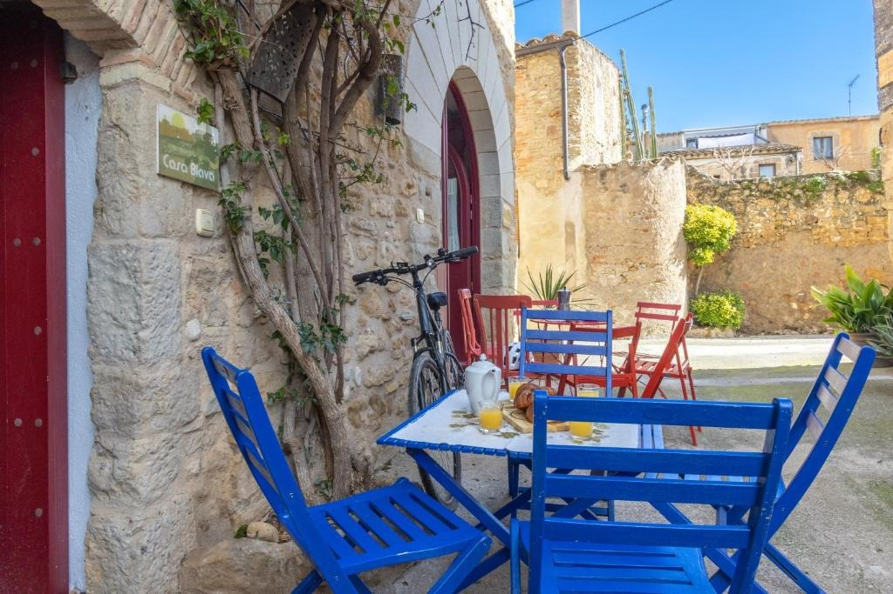
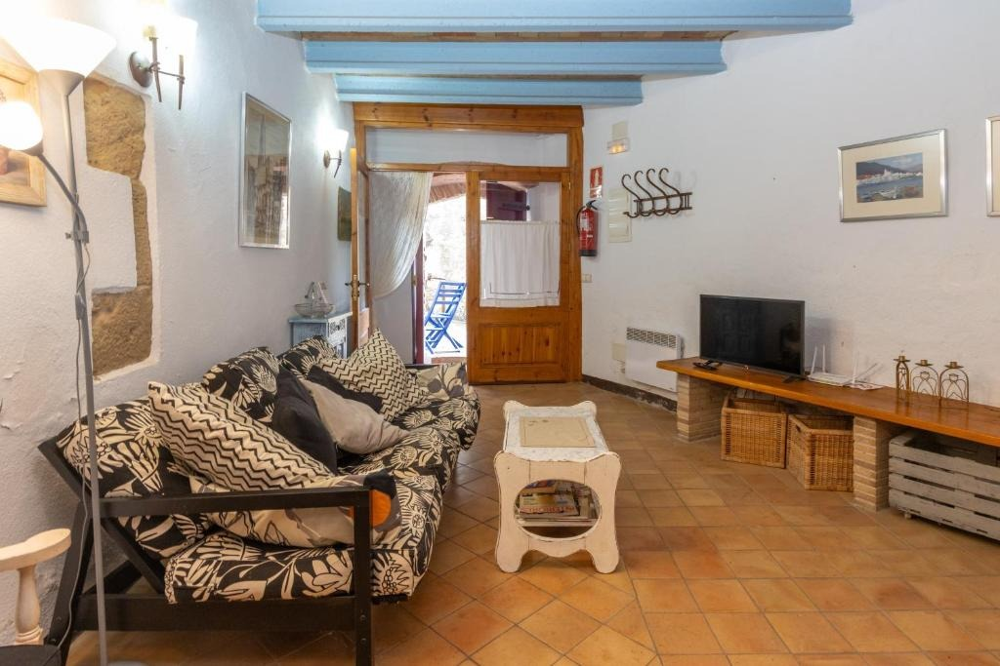
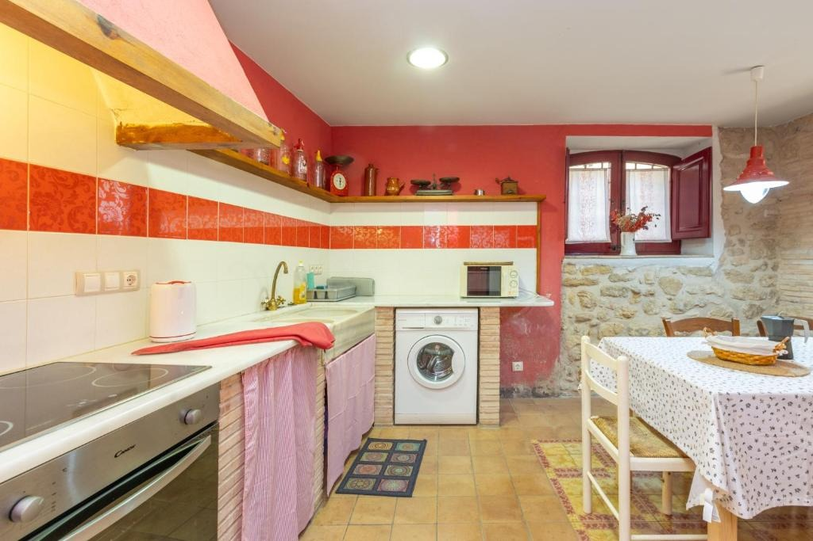
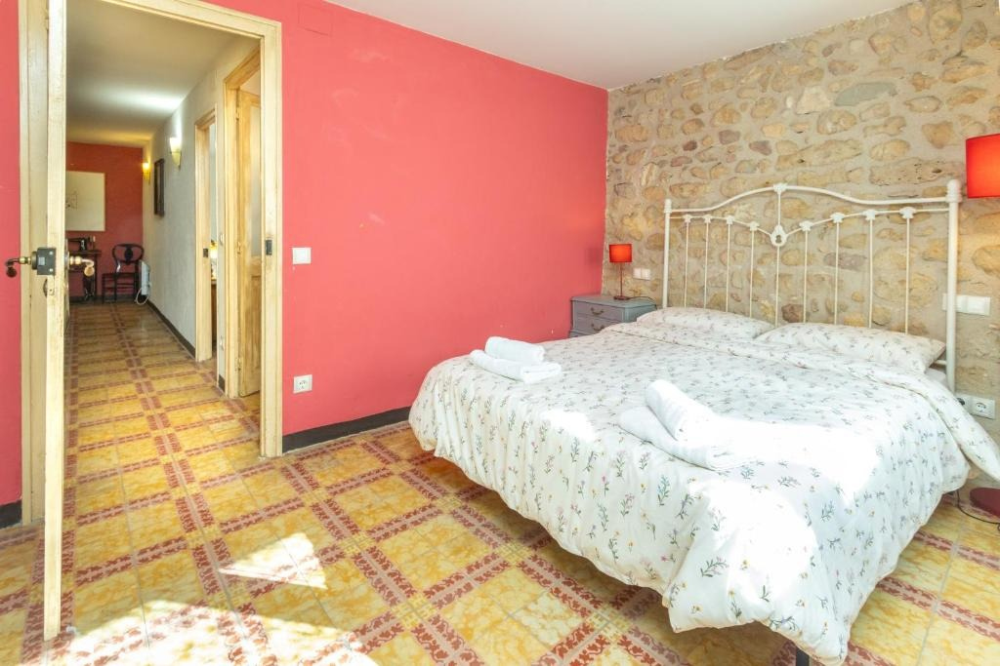

Casa Vermella i Blava
Les dues cases juntes, per a grups més grans
Casa sencera
200 m²
4 dormitoris
9 llits · 2 banys
Fins a 11 persones
Dues cases juntes
Admet mascotes
Pot comportar algun càrrec
La villa
Dues cases per viure Orriols en grup
Casa Vermella i Blava és una villa de 200 m² a Orriols, equipada amb WiFi gratuït i TV. Té 4 dormitoris i 9 llits, una cuina amb forn i microones i 2 banys amb dutxa, amb articles d’higiene gratuïts i rentadora. Hi ha roba de llit i tovalloles.
La villa ofereix zona de jocs infantil, i als voltants es pot fer senderisme, practicar ciclisme o gaudir del jardí. Un allotjament sencer, pensat per a grups més nombrosos.

Exterior
Un pati amb encant
Dues cases de pedra amb pati, bugenvíl·lia i cadires de colors, a pocs passos l’una de l’altra.

Sala d’estar
Sales per estar tots junts
Sales còmodes amb bigues de fusta i llar de foc, ideals per a converses llargues.

Cuina
Cuines equipades
Cuina amb forn, microones, cafetera, bullidor elèctric i rentadora, i taula per a tot el grup.

Dormitoris
Quatre dormitoris i nou llits
4 dormitoris i 9 llits en total, amb roba de llit i tovalloles.

A la casa
Serveis i comoditats
Tot el que necessites per a l’estada, a la casa sencera i només per a tu i el teu grup.
- Casa sencera només per a tu
- 4 dormitoris i 9 llits
- 2 banys
- TV
- Jardí
- Activitats a prop: senderisme i ciclisme
- Cuina amb forn i microones
- Cafetera i bullidor elèctric
- Bany amb dutxa i articles d’higiene gratuïts
- Rentadora
- WiFi gratuït
- Aparcament gratuït al carrer
- Admet mascotes (pot comportar algun càrrec)
- Zona de jocs infantil
- Roba de llit i tovalloles
- Habitacions sense fum
L’entorn
A prop de la casa
Orriols és un petit poble de l’Alt Empordà. Des de la casa hi ha esglésies, ermites i el castell de Vilademuls a pocs quilòmetres, i molts camins per fer en bicicleta o a peu. Distàncies calculades amb OpenStreetMap.
Església de Sant Joan
4,6 km
Castell de Vilademuls
4,6 km
Església de Sant Martí de Fellines
4,8 km
Església de Sant Vicenç
5,2 km
Ermita de Sant Sebastià
5,3 km
Església de Sant Martí
6,1 km
Aeroport de Girona - Costa Brava
32 km
Galeria d’imatges de Casa Vermella i Blava
Totes les fotos de Casa Vermella i Blava: espais, habitacions i racons de la casa.


Reserva
Vols viure Casa Vermella i Blava?
Consulta disponibilitat i preus, o reserva directament a Booking.